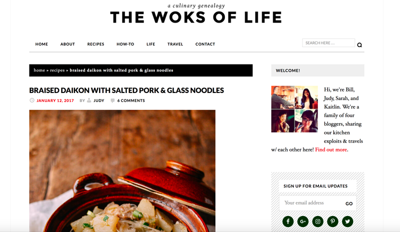
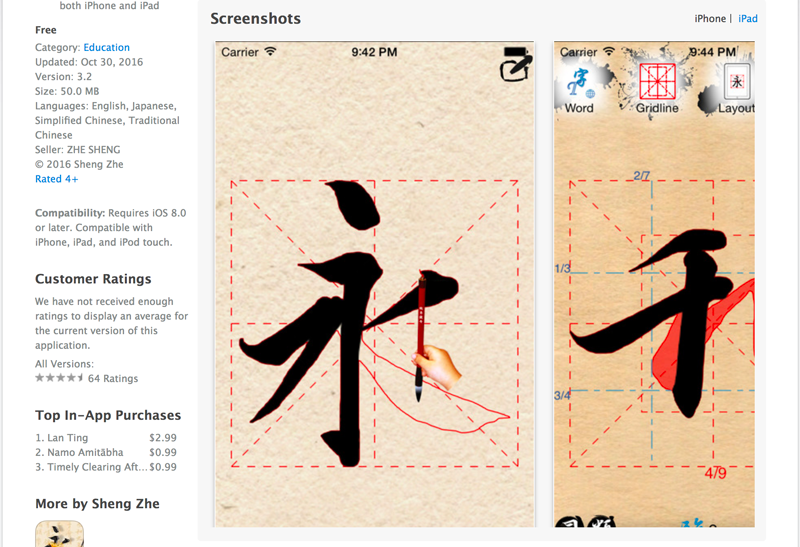
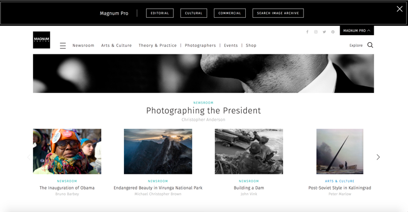

an asian cuisine online cookbook or blog. since one of the sub categories is "how could media art help disseminate cultural values around peace?", i thought creating an online cookbook of all asian cuisine would help the world get used to some of the more eccentric yet still tasty aspects of asian cuisine.
an application that allows you to write and practice other languages' calligraphy (or hand lettering). applications like this already exist, but i thought making it more of a combined learning and interactive experience with more than one language to practice. also, since hand lettering and calligraphy have become so popular, it could kill two birds with one stone.
a collective of professional photographers around the world where they can post their images. it would be another type of social media website - a kind of combination of instagram and twitter into one. professional photographers would post images that exemplify the rich and interesting cultures around the world, as well as photos of significant political or cultural events.
